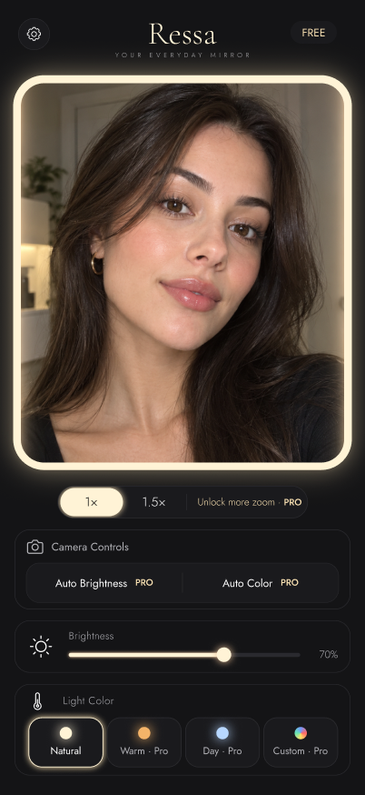
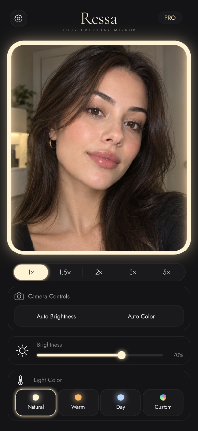
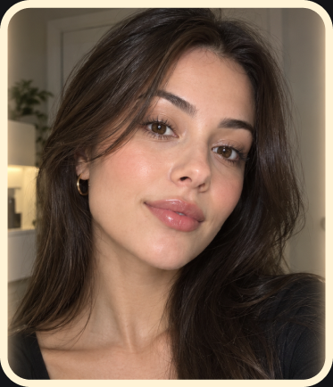
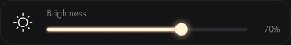
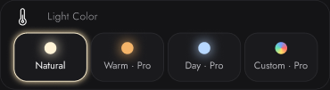
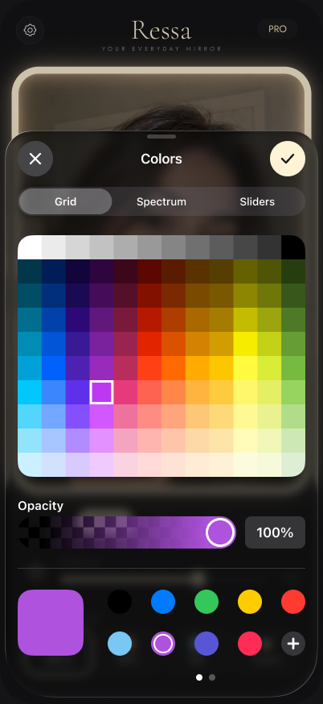

01 / ON THE GO
A mirror, within reach手边，刚好有面镜子
A lipstick touch-up at your desk. A quick check on the train. Open Ressa whenever you need a mirror.在办公室补个口红，在高铁上整理妆容。需要镜子时，拿起手机就好。
YOUR EVERYDAY MIRROR你的随身化妆镜
A quick touch-up. A closer look. Ressa turns your iPhone into a mirror, with adjustable light and the details right where you need them.出门前整理一下，补妆时再看仔细一点。Ressa 把 iPhone 变成一面随身镜，光线和细节，都可以调到刚刚好。
For iPhone · iOS 18+ · Currently in TestFlight适用于 iPhone · iOS 18+ · TestFlight 内测中


THE EVERYDAY MOMENTS日常里的小需要
Before you leave, between plans, or just before you walk in.出门前、约会前，或是忙碌一天里，留给自己的片刻。
01 / ON THE GO
A lipstick touch-up at your desk. A quick check on the train. Open Ressa whenever you need a mirror.在办公室补个口红，在高铁上整理妆容。需要镜子时，拿起手机就好。
02 / IN YOUR LIGHT
When the room feels too dim, bring the screen light up to a comfortable level.房间有些暗，就把补光调亮一点。亮度由你掌握，照镜子也更舒服。
03 / THE FINISHING TOUCH
Check the edge of your liner or the shape of a brow. Zoom in without leaning closer to the screen.眼线的收尾、眉形的弧度。放大看看，不必一直往屏幕前凑。
JUST YOU镜面

FIND YOUR LIGHT灯光
Light comes from the screen around your reflection. Adjust its brightness and color without adding a filter to the camera view.镜面四周的屏幕为你补光。调节亮度、选择光色，让照镜子的这一刻更舒服；Ressa 不会给相机画面叠加滤镜。
LIGHT, YOUR WAY适合你的光
Natural light and brightness adjustment are included. Pro adds Warm, Day and a custom color of your own.自然光和亮度调节免费使用。Pro 提供暖光、日光，也支持选择你喜欢的光色。



A CLOSER LOOK细节
A MOMENT TO LOOK定格
Check a side profile or compare both sides without holding the same pose. Freeze is included in the free mirror.想看看侧脸，或仔细对比左右妆容？轻点定格，不必一直保持同一个姿势。免费版也可以使用。
Hold the current view. The camera pauses while you inspect it.留下当前画面，相机随之暂停。
Zoom and move around the held frame. Higher magnification is available with Pro.放大、拖动，找到想看的细节。高倍率需使用 Pro。
Tap Resume to return to the live mirror. The temporary frame is cleared without saving a photo.轻点恢复，临时画面随即清除，不会保存到相册。
JUST BETWEEN YOU AND YOUR MIRROR隐私
Your camera view stays on your iPhone. There is nothing to post, and no account to create.镜面画面留在你的 iPhone 上。无需注册，也没有需要分享的动态。
A LITTLE MORE, IF YOU NEED ITRESSA PRO
Start with the essentials. Unlock more magnification and lighting options with a monthly, six-month or lifetime plan.日常照镜子需要的功能，免费就有。想看得更近、调光更自由，可以按月、按半年订阅，或一次买断 Pro。
$0everyday essentials日常基础功能
USD reference prices美元参考价
Currently in beta. The final price is shown in the app in your local currency. Subscriptions renew automatically until cancelled in your App Store settings.目前处于内测阶段，正式价格以应用内显示的当地货币金额为准。订阅会自动续期，可随时在 App Store 设置中取消。
GOOD TO KNOW常见问题
Ressa works on iPhone with iOS 18 or later, in portrait orientation. Allow camera access when you first open the app.支持运行 iOS 18 及以上版本的 iPhone，竖屏使用。首次打开时，需要允许访问摄像头。
Use “Join the beta” to email us. Ressa is currently available through TestFlight; an App Store download is not available yet.点击「申请内测」即可给我们发送邮件。Ressa 目前通过 TestFlight 测试，尚未开放 App Store 下载。
No. Freeze holds a temporary frame in memory so you can inspect it. Resuming or leaving the mirror clears it.不会。定格只把一帧画面暂留在内存中，方便仔细查看；恢复或离开镜面后，画面就会清除。
The screen around the mirror emits light toward your face. Brightness and color affect that light; Ressa does not apply a color filter to the camera preview. The effect depends on your screen, distance and surroundings.镜面四周的屏幕发出光线，为面部补光。亮度和光色调节作用于这圈光，Ressa 不会给相机预览叠加调色滤镜。实际效果会随屏幕、距离和环境光而变化。
Ressa brings a mirrored view, screen light, magnification and Freeze together in one place. Its controls are arranged for checking your reflection and touching up makeup.Ressa 把镜像预览、屏幕补光、倍率调节和定格放在同一处，界面围绕照镜子和补妆来设计。
Your choice. Pro comes as a monthly subscription (US$0.99), a six-month subscription (US$3.99) or a lifetime one-time purchase (US$5.99). Subscriptions unlock Pro while they remain active and renew automatically until you cancel; the lifetime purchase unlocks Pro for good. Any of them can be restored with the same Apple Account, and the free mirror remains available without purchasing Pro.由你选择。Pro 提供按月订阅（0.99 美元/月）、半年订阅（3.99 美元/六个月）和终身买断（5.99 美元）三种方式。订阅在有效期内解锁 Pro，并自动续期，可随时取消；买断则永久解锁。三种方式都可以用同一 Apple 账户恢复购买，不购买 Pro，也可以继续使用免费镜面。
Ressa is in beta. Come try it, and tell us how it fits into your day.Ressa 正在内测。欢迎来试试，也告诉我们，你希望这面镜子是什么样。